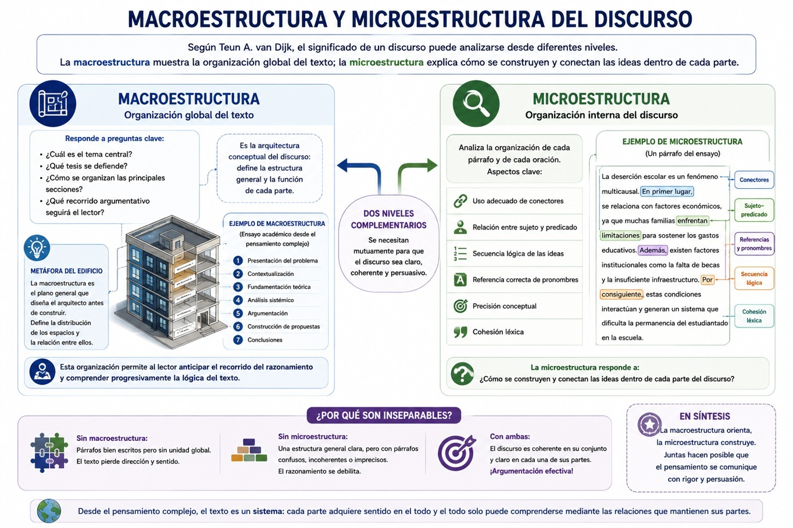
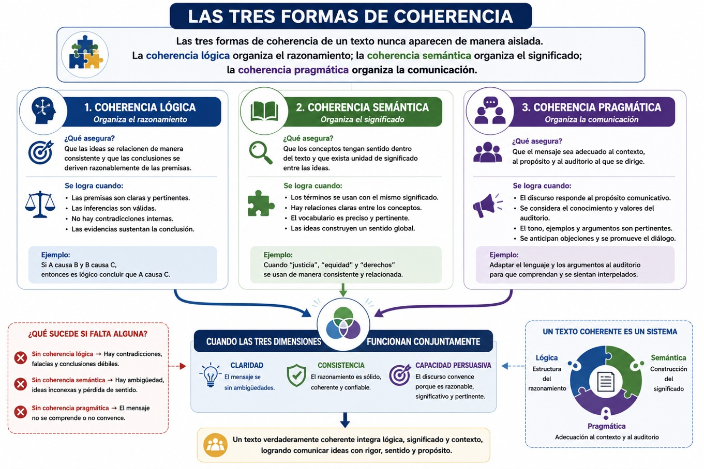

A lo largo de esta UCA se ha mostrado que argumentar constituye mucho más que expresar opiniones o defender una postura personal. Argumentar implica comprender la realidad desde una perspectiva compleja, recuperar información pertinente, organizar las evidencias, justificar las conclusiones mediante razones sólidas y construir propuestas orientadas a la transformación social. Sin embargo, todo este proceso intelectual perdería gran parte de su valor si el conocimiento no pudiera comunicarse de manera clara, coherente y comprensible para otras personas. La calidad del pensamiento depende también de la calidad con la que ese pensamiento es expresado.
Con frecuencia, a lo largo de nuestra educación, se considera que escribir correctamente consiste únicamente en evitar errores ortográficos o gramaticales. Aunque estos aspectos son importantes, representan solamente una parte del proceso comunicativo. Un texto puede estar perfectamente redactado desde el punto de vista lingüístico y, sin embargo, carecer de coherencia argumentativa, presentar ideas desconectadas o desarrollar razonamientos contradictorios. Del mismo modo, una exposición oral puede utilizar un vocabulario amplio y una excelente dicción, pero fracasar en su propósito comunicativo porque las ideas no mantienen una organización lógica que permita al auditorio comprender el mensaje.
De este modo, el sentido y la coherencia escrita y oral dejan de entenderse como simples habilidades lingüísticas para convertirse en competencias intelectuales estrechamente vinculadas con el pensamiento complejo. La coherencia refleja la capacidad para establecer relaciones entre conceptos; la cohesión organiza lingüísticamente dichas relaciones; la progresión temática permite desarrollar gradualmente una explicación; y la comunicación oral exige adaptar constantemente el discurso a las características del auditorio y del contexto donde ocurre la interacción.
En este saber revisaremos los principales elementos que permiten construir textos y exposiciones coherentes desde una perspectiva compleja. Se abordarán la cohesión, la coherencia y la progresión temática; posteriormente se estudiarán la macroestructura y la microestructura del discurso; finalmente se integrarán estos conceptos con la argumentación oral, la comunicación científica y la comprensión sistémica del conocimiento desarrollada a lo largo de esta UCA.
Cohesión, coherencia y progresión temática
Uno de los errores más comunes al elaborar un texto académico consiste en creer que basta con reunir información relevante para producir una buena argumentación. Muchas y muchos estudiantes investigan ampliamente un tema, consultan diversas fuentes y redactan párrafos bien construidos desde el punto de vista gramatical; sin embargo, el resultado suele ser un documento donde las ideas aparecen desarticuladas, los argumentos se repiten, las conclusiones no derivan claramente de las evidencias o quien lee tiene dificultades para seguir el hilo del razonamiento. Estas dificultades no se explican por la falta de información, sino por problemas relacionados con la cohesión, la coherencia y la progresión temática.
Aunque estos conceptos suelen utilizarse como sinónimos, cada uno cumple una función distinta dentro del discurso, revisemos cada uno.
La cohesión hace referencia a los mecanismos lingüísticos que permiten conectar unas ideas con otras. Se manifiesta mediante conectores, pronombres, referencias, sustituciones léxicas, repeticiones controladas y otros recursos gramaticales que facilitan la continuidad del discurso. Gracias a la cohesión, quien lee puede identificar cómo se relacionan las distintas oraciones y párrafos que integran un texto.
Por ejemplo, observemos las siguientes afirmaciones:
"La pobreza afecta el acceso a la educación. Muchas familias abandonan la escuela. Existen menores oportunidades laborales. La desigualdad aumenta.”
Aunque todas las oraciones se refieren al mismo tema, aparecen desconectadas. Ahora observemos una versión cohesionada:
"La pobreza afecta el acceso a la educación. Como consecuencia, muchas familias enfrentan dificultades para mantener a sus hijas e hijos en la escuela. Esta situación reduce posteriormente las oportunidades laborales y, en esto, a su vez, incrementa los niveles de desigualdad."
Los conectores y referencias establecen relaciones explícitas entre las ideas, facilitando la comprensión del razonamiento.
La cohesión constituye, por tanto, la dimensión visible de la organización textual. Sin embargo, un texto puede estar correctamente cohesionado y seguir careciendo de coherencia.
La coherencia, por su parte, corresponde a la organización lógica y conceptual del discurso. Un texto coherente desarrolla una idea central claramente identificable y organiza todas las demás ideas de manera que contribuyan a fortalecer esa explicación. Cada párrafo mantiene una relación significativa con el anterior y prepara el desarrollo del siguiente. No existen contradicciones internas ni afirmaciones que se alejen del propósito principal del texto.
Desde el pensamiento complejo, la coherencia adquiere un significado todavía más amplio. No consiste únicamente en mantener una secuencia lógica de ideas, sino en representar adecuadamente las relaciones existentes dentro del fenómeno analizado. Un texto sobre cambio climático será coherente si logra mostrar las conexiones entre economía, energía, política, ambiente, tecnología y comportamiento social; un texto sobre violencia de género será coherente cuando integre dimensiones culturales, jurídicas, económicas, psicológicas e institucionales sin reducir el problema a una única causa.
La coherencia refleja, por tanto, la calidad del modelo explicativo construido por el autor. Mientras la cohesión organiza las palabras, la coherencia organiza el conocimiento.
Un tercer componente fundamental corresponde a la progresión temática. Todo texto académico debe desarrollar sus ideas de manera gradual, permitiendo que cada nueva información se apoye en la anterior y prepare la comprensión de la siguiente. Quien lee no puede comprender conceptos complejos si éstos aparecen de forma abrupta o desorganizada.
La progresión temática puede compararse con la construcción de un edificio. Los cimientos sostienen la estructura; posteriormente se levantan los muros; finalmente se incorporan los elementos que completan la construcción. Del mismo modo, un texto argumentativo comienza presentando el problema, desarrolla progresivamente las evidencias, explica las relaciones existentes entre ellas y concluye construyendo una explicación o una propuesta fundamentada.
Cohesión, coherencia y pensamiento complejo
Estos tres conceptos mantienen una relación directa con el pensamiento complejo pues recordemos que Edgar Morin sostiene que conocer significa establecer relaciones significativas entre elementos diversos. La cohesión refleja esas relaciones mediante recursos lingüísticos; la coherencia organiza dichas relaciones dentro de una explicación global y la progresión temática permite desarrollar gradualmente la comprensión del sistema analizado.
De alguna manera podríamos decir que un texto constituye un pequeño sistema complejo en el que cada oración representa un componente; los párrafos funcionan como subsistemas; la tesis organiza el conjunto del discurso; los conectores establecen relaciones entre las partes; y la conclusión representa una propiedad emergente que únicamente puede comprenderse después de recorrer todo el razonamiento.
Cuando alguno de estos elementos falla, el sistema pierde coherencia. Del mismo modo que un sistema social no puede comprenderse analizando únicamente uno de sus componentes, un texto no puede construirse mediante ideas aisladas. Su calidad depende de la manera en que todas las partes interactúan para producir un significado integrado.
Macroestructura y microestructura del discurso
La teoría del discurso desarrollada por Teun A. van Dijk constituye una de las aportaciones más importantes para comprender cómo se organizan los textos académicos. Van Dijk sostiene que el significado de un discurso puede analizarse desde diferentes niveles, entre los cuales destacan la macroestructura y la microestructura. Esta distinción resulta especialmente útil para la argumentación porque permite comprender simultáneamente la organización global del texto y las relaciones específicas entre sus componentes.
- La macroestructura representa la organización general del texto. Responde a preguntas como:
- • ¿Cuál es el tema central?
- • ¿Qué tesis se defiende?
- • ¿Cómo se organizan las principales secciones?
- • ¿Qué recorrido argumentativo seguirá el lector?
En otras palabras, la macroestructura constituye la arquitectura conceptual del discurso.
Si imaginamos un ensayo como un edificio, la macroestructura correspondería al plano general elaborado por el arquitecto antes de iniciar la construcción. Define la distribución de los espacios, la relación entre ellos y la función que cumplirá cada parte dentro del conjunto.
En un ensayo académico basado en el pensamiento complejo, una posible macroestructura podría organizarse así:
- • Presentación del problema.
- • Contextualización.
- • Fundamentación teórica.
- • Análisis sistémico.
- • Argumentación.
- • Construcción de propuestas.
- • Conclusiones.
Esta organización permite a quien lee anticipar el recorrido del razonamiento y comprender progresivamente la lógica del texto.
- La microestructura, por el contrario, analiza la organización interna de cada párrafo y de cada oración. Aquí adquieren importancia aspectos como:
- • el uso adecuado de conectores;
- • la relación entre sujeto y predicado;
- • la secuencia lógica de las ideas;
- • la referencia correcta de pronombres;
- • la precisión conceptual;
- • la cohesión léxica.
Mientras la macroestructura responde a la pregunta ¿cómo está organizado el texto completo?, la microestructura responde a ¿cómo se construyen y conectan las ideas dentro de cada parte del discurso?
Desde la argumentación, ambos niveles resultan inseparables. Un excelente razonamiento puede perder eficacia si cada párrafo presenta problemas de cohesión o precisión conceptual. Del mismo modo, párrafos perfectamente redactados resultarán insuficientes si el texto carece de una organización global coherente.
Integración de ambos niveles
La calidad de un texto académico depende precisamente de la interacción entre macroestructura y microestructura. La primera proporciona dirección al razonamiento; la segunda garantiza la claridad de cada uno de sus componentes. En conjunto, ambas reflejan la organización del pensamiento del autor y permiten comunicar explicaciones complejas de manera comprensible como lo puedes ver en el siguiente gráfico:

Coherencia lógica, semántica y pragmática
En los apartados anteriores se explicó que la cohesión organiza lingüísticamente las relaciones entre las ideas y que la coherencia representa la unidad conceptual del discurso. Sin embargo, la coherencia constituye un fenómeno mucho más amplio que puede analizarse desde diferentes dimensiones. Para comprender plenamente cómo se construye un texto argumentativo es necesario que distingas entre coherencia lógica, coherencia semántica y coherencia pragmática. Estas tres dimensiones actúan simultáneamente y permiten que un discurso sea comprensible, consistente y pertinente para el contexto donde se comunica.
La coherencia lógica hace referencia a la consistencia del razonamiento. Un texto presenta coherencia lógica cuando las conclusiones se derivan razonablemente de las evidencias y cuando las relaciones entre las distintas afirmaciones respetan principios elementales de racionalidad. No deben existir contradicciones internas, inferencias injustificadas ni afirmaciones incompatibles entre sí.
Desde la perspectiva del modelo argumentativo de Stephen Toulmin, la coherencia lógica se construye mediante la adecuada relación entre los distintos componentes del argumento. La tesis debe sustentarse en datos verificables; las garantías deben explicar por qué dichos datos respaldan la conclusión; el respaldo fortalece la validez de las garantías; el calificador modal expresa el grado de certeza de la afirmación y las refutaciones reconocen las posibles limitaciones del razonamiento. Cuando alguno de estos elementos falta o presenta inconsistencias, la coherencia lógica del discurso se debilita.
La coherencia semántica, por su parte, se refiere a la construcción del significado. Un texto presenta coherencia semántica cuando los conceptos utilizados mantienen relaciones claras entre sí y cuando el vocabulario empleado resulta consistente a lo largo del discurso. Las palabras no aparecen como elementos aislados, sino como componentes de una red conceptual que permite comprender progresivamente el fenómeno analizado.
En la escritura académica es frecuente encontrar problemas de coherencia semántica cuando un mismo concepto se utiliza con significados diferentes o cuando el autor incorpora términos especializados sin definirlos adecuadamente. Por ejemplo, si utilizas indistintamente los conceptos de problema, problemática, fenómeno y objeto de estudio como si fueran equivalentes, generas ambigüedad conceptual y dificulta la comprensión del texto. Del mismo modo, hablar de complejidad como sinónimo de complicación contradice las definiciones trabajadas en esta UCA.
Desde el pensamiento complejo, la coherencia semántica implica también establecer relaciones entre conceptos pertenecientes a distintas disciplinas. Un análisis sobre el cambio climático puede integrar nociones provenientes de la ecología, la economía, la sociología y la ciencia política, siempre que dichas categorías mantengan un significado consistente dentro del argumento. Esta integración interdisciplinaria fortalece la explicación y evita la fragmentación del conocimiento. Una estrategia que te puede ser útil para mejorar la coherencia semántica consiste en construir previamente un mapa conceptual de los principales términos que integrarán el texto. Al identificar las relaciones entre ellos, te puedes asegurar que cada concepto cumple una función específica dentro de la explicación general y que no existen contradicciones terminológicas.
Finalmente, la tercera dimensión corresponde a la coherencia pragmática, que referencia a la adecuación del discurso respecto del contexto comunicativo. Un argumento puede ser lógica y semánticamente correcto, pero resultar ineficaz si no considera las características del auditorio, las condiciones de la comunicación o los objetivos perseguidos.
Esta dimensión se relaciona directamente con la teoría de la argumentación de Chaim Perelman. Como se estudió anteriormente, Perelman sostiene que toda argumentación se dirige a una audiencia determinada y que la fuerza persuasiva del discurso depende de su capacidad para dialogar con los conocimientos, valores y expectativas de quienes lo reciben. La coherencia pragmática exige entonces preguntarse continuamente:
- • ¿Quién leerá este texto?
- • ¿Qué conocimientos posee sobre el tema?
- • ¿Qué conceptos requieren explicación?
- • ¿Qué tipo de evidencias resultarán más convincentes?
- • ¿Qué objeciones podrían surgir durante la lectura?
Estas preguntas muestran que la coherencia no depende únicamente del texto, sino también de la interacción entre el autor y quien lee.
Por ejemplo, una conferencia dirigida a especialistas en salud pública puede utilizar terminología epidemiológica altamente especializada. Sin embargo, ese mismo discurso resultaría poco coherente si se presentara ante organizaciones comunitarias sin realizar las adaptaciones necesarias. El contenido esencial podría mantenerse, pero el lenguaje, los ejemplos y las estrategias argumentativas deberían modificarse para responder adecuadamente al nuevo contexto comunicativo.
Integración de las tres dimensiones
En realidad, estas tres formas de coherencia nunca aparecen de manera aislada. La coherencia lógica organiza el razonamiento; la coherencia semántica organiza el significado; la coherencia pragmática organiza la comunicación. Cuando las tres dimensiones funcionan conjuntamente, el discurso adquiere claridad, consistencia y capacidad persuasiva.
Podría afirmarse que la coherencia constituye un sistema donde cada dimensión cumple una función específica y todas interactúan para producir un efecto emergente: la comprensión del mensaje, como puedes observar en el siguiente diagrama:

La revisión y mejora de la argumentación escrita
Debemos estar conscientes de que una de las principales ventajas de la escritura frente a la oralidad consiste en la posibilidad de revisar continuamente el texto antes de su publicación o entrega. La revisión constituye una etapa indispensable del proceso argumentativo y no debe entenderse como una simple corrección ortográfica, sino como una evaluación crítica del propio razonamiento.
En ese sentido, revisar implica preguntarse si la tesis aparece claramente formulada, si los argumentos realmente la sustentan, si las evidencias son suficientes y pertinentes, si las inferencias resultan justificadas y si las posibles objeciones han sido adecuadamente consideradas.
Esta revisión constituye también un ejercicio metacognitivo. Como autora o autor, debes analizar tu propio pensamiento, identificar inconsistencias, reorganizar explicaciones y fortalecer la estructura lógica de tu discurso. En este sentido, escribir y revisar se convierten en procesos inseparables de autorregulación cognitiva.
Entonces, resulta útil realizar la revisión en diferentes niveles, en un primer momento puede analizarse la organización global del texto: ¿los apartados mantienen una secuencia lógica?, ¿la introducción plantea claramente el problema?, ¿la conclusión responde efectivamente a la tesis? Posteriormente conviene revisar cada párrafo de manera individual, verificando que contenga una idea principal claramente desarrollada y conectada con el resto del argumento. Finalmente debe realizarse una revisión lingüística donde se evalúe la claridad de las expresiones, la precisión conceptual, la cohesión textual y la corrección gramatical. Un argumento científicamente sólido pierde eficacia si el lector encuentra dificultades para interpretar el texto.
En síntesis, es recomendable que integres la etapa de una revisión en varios niveles, de los textos argumentativos que escribas, pues parte del proceso propio de la argumentación es lograr una comunicación clara de la estructura de tus argumentos.
Argumentación oral y comunicación científica
Es importante revisar que la argumentación no se limita a los textos escritos ya que, en la vida profesional una parte importante del conocimiento se comunica mediante exposiciones, conferencias, debates, reuniones de trabajo, defensas de proyectos, presentaciones de investigación y procesos de deliberación colectiva. En todos estos escenarios, la capacidad para construir discursos orales claros, coherentes y fundamentados constituye una competencia esencial.
Con frecuencia se piensa que hablar consiste simplemente en expresar verbalmente las ideas previamente escritas. Sin embargo, la comunicación oral posee características propias que la diferencian de la escritura. Mientras el texto escrito permite revisar continuamente la organización del discurso antes de presentarlo, la exposición oral exige reorganizar constantemente la argumentación en función de las reacciones del auditorio. Quien habla interpreta gestos, preguntas, silencios y expresiones que le permiten adaptar progresivamente su explicación. La oralidad constituye, por tanto, un proceso dinámico de interacción.
Desde la perspectiva de Mijaíl Bajtín (1982), toda comunicación posee un carácter dialógico pues ningún discurso se construye de manera completamente aislada; siempre responde a otros discursos anteriores y anticipa posibles respuestas futuras. Esta concepción resulta especialmente relevante para la argumentación a nivel universitario porque muestra que exponer una idea implica participar en un diálogo permanente con otras perspectivas, con investigaciones previas y con las preguntas formuladas por el auditorio.
- En ese sentido, la argumentación oral exige, además, una planificación específica. Antes de realizar una presentación académica el estudiante debe preguntarse:
- • ¿Cuál es la idea principal que deseo comunicar?
- • ¿Qué conocimientos posee mi auditorio?
- • ¿Qué evidencias necesito presentar?
- • ¿Qué ejemplos facilitarán la comprensión?
- • ¿Qué preguntas podrían formularse?
- • ¿Cómo responderé a posibles objeciones?
Estas preguntas recuperan nuevamente las aportaciones de Chaim Perelman, quien sitúa al auditorio en el centro del proceso argumentativo. Una presentación científicamente rigurosa no consiste en repetir toda la información disponible, sino en seleccionar aquella que permita construir un diálogo racional con quienes participan en la comunicación.
En síntesis, la argumentación oral y la comunicación científica constituyen competencias indispensables para tu ejercicio profesional y para la participación responsable en la vida académica. Ambas requieren integrar rigor conceptual, claridad expositiva, capacidad de diálogo y adaptación constante al contexto comunicativo. Desde el pensamiento complejo, hablar y escribir representan dos formas complementarias de organizar y compartir el conocimiento, permitiendo que las ideas construidas individualmente se transformen en procesos colectivos de aprendizaje, deliberación e innovación.
- Van Dijk, T. A. (1996). Estructuras y funciones del discurso. Siglo XXI Editores.
- Bajtín, M. M. (1982). Estética de la creación verbal. Siglo XXI Editores.
- López, Julieta (2020). Escribir los argumentos, en Luis García & Julieta Arisbe, Coords., Pensamiento Crítico para el Aprendizaje. México: ENES-Morelia, UNAM, 86-99.